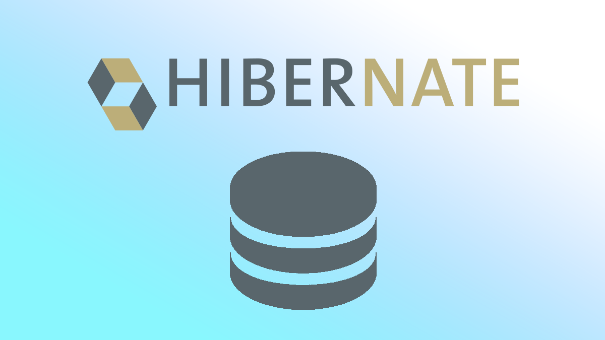
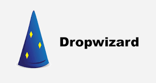

Các Framework phổ biến trong Java: Lựa chọn phù hợp cho dự án của bạn

Java là một trong những ngôn ngữ lập trình phổ biến và mạnh mẽ nhất trên thế giới, được sử dụng rộng rãi trong các ứng dụng doanh nghiệp, hệ thống phân tán, và các nền tảng web. Một trong những lý do Java giữ được sức hút lâu dài là nhờ vào sự phát triển của các framework mạnh mẽ giúp lập trình viên dễ dàng xây dựng và duy trì các ứng dụng chất lượng cao. Trong bài viết này, chúng ta sẽ tìm hiểu một số framework phổ biến trong Java mà bạn nên biết.
1. Spring Framework
Spring là một trong những framework nổi bật nhất trong hệ sinh thái Java. Nó cung cấp một loạt các công cụ giúp xây dựng ứng dụng Java một cách nhanh chóng và dễ dàng. Các tính năng nổi bật của Spring bao gồm:
- Spring Core: Hỗ trợ các tính năng như Dependency Injection, giúp dễ dàng quản lý sự phụ thuộc trong ứng dụng.
- Spring Boot: Giúp tạo ra các ứng dụng độc lập và dễ dàng triển khai mà không cần phải cấu hình phức tạp.
- Spring MVC: Là framework xây dựng các ứng dụng web theo mô hình Model-View-Controller, rất phù hợp với các ứng dụng RESTful API.
- Spring Security: Cung cấp các cơ chế bảo mật mạnh mẽ cho ứng dụng Java, bao gồm quản lý xác thực và phân quyền.
Spring giúp giảm thiểu mã nguồn và làm cho việc phát triển ứng dụng Java trở nên hiệu quả hơn, nhờ vào tính năng tự động cấu hình và các thư viện mở rộng.

2. Hibernate
Hibernate là một framework ORM (Object-Relational Mapping) cho phép bạn làm việc với cơ sở dữ liệu mà không cần phải viết nhiều mã SQL thủ công. Thay vào đó, Hibernate giúp chuyển đổi dữ liệu giữa các bảng trong cơ sở dữ liệu và các đối tượng trong Java. Một số tính năng của Hibernate bao gồm:
- Quản lý kết nối cơ sở dữ liệu: Hibernate giúp quản lý kết nối với cơ sở dữ liệu một cách hiệu quả.
- Tự động sinh mã SQL: Hibernate tự động tạo ra các câu lệnh SQL để thao tác với cơ sở dữ liệu, giảm thiểu sự can thiệp thủ công.
- Hỗ trợ Cache: Hibernate có hỗ trợ bộ nhớ cache để tối ưu hiệu suất truy vấn.
Hibernate được sử dụng phổ biến trong các ứng dụng Java Enterprise để giảm thiểu mã nguồn và làm việc hiệu quả với cơ sở dữ liệu. 
3. JavaServer Faces (JSF)
JSF là một framework để phát triển các ứng dụng web trong Java. Nó dựa trên mô hình Component-Based UI, giúp bạn xây dựng giao diện người dùng dễ dàng hơn. Các tính năng nổi bật của JSF bao gồm:
- Giao diện người dùng dạng component: Các thành phần giao diện người dùng được quản lý và kết nối dễ dàng, giúp giảm thiểu sự phức tạp khi phát triển các trang web động.
- Tích hợp với các công nghệ khác: JSF có thể dễ dàng tích hợp với các công nghệ Java khác như EJB (Enterprise JavaBeans), JPA (Java Persistence API), và Spring.
- Quản lý trạng thái: JSF tự động xử lý việc duy trì trạng thái của các thành phần UI, giúp giảm thiểu công sức cho lập trình viên.
JSF là một lựa chọn phổ biến khi phát triển các ứng dụng web có giao diện người dùng phức tạp.

4. Grails
Grails là một framework phát triển ứng dụng web dựa trên Groovy và sử dụng Spring, Hibernate. Grails mang lại nhiều lợi ích khi phát triển ứng dụng web nhanh chóng nhờ vào cú pháp đơn giản và khả năng kết hợp mạnh mẽ với Spring. Một số đặc điểm nổi bật của Grails là:
- Cấu hình tự động: Giúp giảm bớt việc cấu hình thủ công, giúp lập trình viên tập trung vào việc phát triển tính năng.
- Mở rộng từ Spring: Grails tận dụng sức mạnh của Spring, Hibernate và các công nghệ Java khác để phát triển ứng dụng.
- Tích hợp tốt với Java: Grails cho phép bạn tích hợp với các thư viện Java hiện có, giúp tận dụng các mã nguồn sẵn có.
Grails là một lựa chọn lý tưởng cho những ai muốn phát triển ứng dụng web nhanh chóng và hiệu quả.
5. Dropwizard
Dropwizard là một framework tối giản giúp xây dựng các dịch vụ web nhanh chóng và hiệu quả. Nó cung cấp một bộ công cụ mạnh mẽ để phát triển RESTful APIs, bao gồm:
- Tích hợp các thư viện phổ biến: Dropwizard tích hợp nhiều thư viện như Jetty (web server), Jersey (RESTful APIs), Jackson (JSON), và nhiều công cụ khác, giúp việc phát triển API trở nên dễ dàng.
- Hỗ trợ cấu hình đơn giản: Các ứng dụng Dropwizard có thể được cấu hình bằng các tệp YAML dễ đọc, giúp lập trình viên dễ dàng thay đổi cài đặt ứng dụng.
- Giám sát và logging: Dropwizard tích hợp các công cụ giám sát và logging giúp dễ dàng theo dõi và xử lý sự cố.
Dropwizard là sự lựa chọn tuyệt vời cho các dịch vụ web nhẹ và API RESTful. 
Kết luận
Việc lựa chọn framework trong Java phụ thuộc vào yêu cầu của dự án và kỹ năng của nhóm phát triển. Nếu bạn cần xây dựng ứng dụng web phức tạp với nhiều tính năng, Spring là một lựa chọn không thể bỏ qua. Nếu dự án của bạn yêu cầu làm việc nhiều với cơ sở dữ liệu, Hibernate sẽ là công cụ hỗ trợ đắc lực. Còn nếu bạn đang tìm kiếm một giải pháp nhanh chóng để phát triển API hoặc dịch vụ web, Dropwizard và Grails sẽ là lựa chọn lý tưởng.
Hy vọng bài viết này đã giúp bạn có cái nhìn tổng quan về các framework phổ biến trong Java và cách lựa chọn công cụ phù hợp cho dự án của mình!
Sharing is caring!